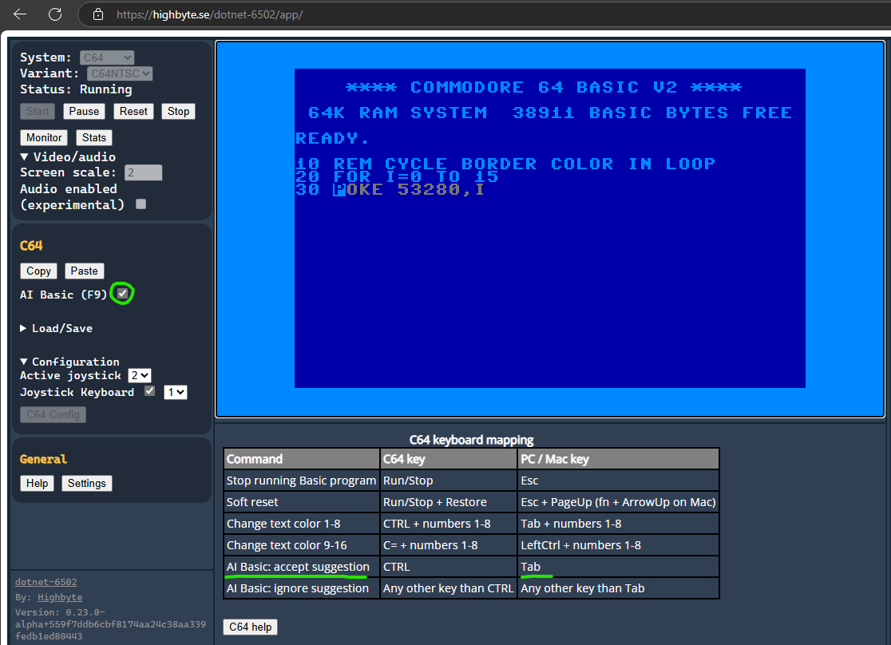
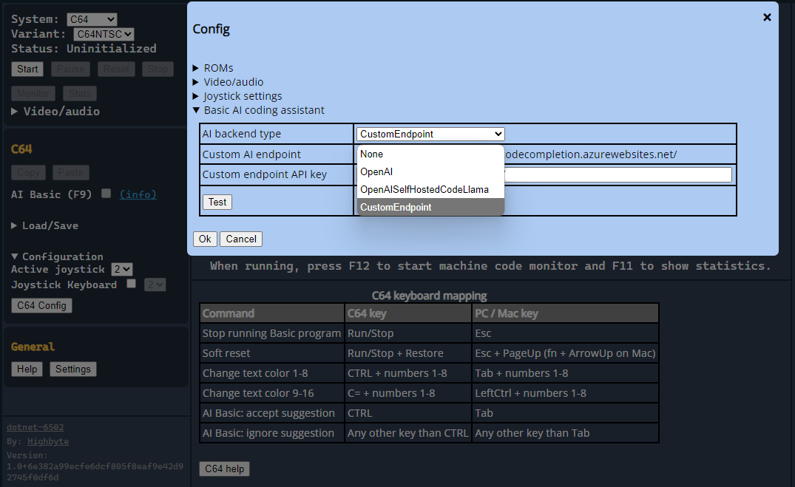

Basic code completion¶
An experimental AI-powered Basic coding assistant available in the C64 emulator that can be turned on. This is a work in progress.
Background¶
Note
If AI capabilities like GitHub Copilot were available in the 80s, how could a similar experience be had in the then-existing Commodore 64 Basic editor? That was the thought experiment that lead to the idea of trying to integrate an AI coding assistant inside the C64 Basic (with existing 80s UI limitations).
Use¶
Important
Assuming the coding assistant is configured correctly, the assistant can be used when writing Commodore 64 Basic programs inside the emulator.
Turn on/off¶
Use the AI Basic checkbox or F9 to toggle assistant on/off.
Code suggestions¶
- After a Basic line number has been entered, and you have stopped typing for a short while, a suggestion for the rest of the line will be displayed in grey text.
- Accept the suggestion by pressing
Tab. - Ignore the suggestion by pressing any other key.
Info
- Suggestions only appear after you've entered a line number (that is not followed by a
REMcomment statement). - If no suggestion appears, it's either because the AI backend could not give any suggestion, or the request to the AI backend failed for some reason (verify that the connection works via Config UI, see Configure).
Tip
You can enter a Basic line with a comment (REM statement) and explain what you want the program to do. Then when you start typing the next several lines it will continuously suggest new code that builds up your program based on the comment.

Configure¶
Important
The AI coding assistant is currently available in the Blazor WebAssembly, Avalonia and SadConsole versions of the emulator.
Blazor WebAssembly and Avalonia Browser version¶
The configuration is done in the Configuration section → C64 Config button → Basic AI coding assistant section.
AI backend type: CustomEndpoint (temporarily available)¶
There is a temporarily available AI backend that won't require your own OpenAI API key. This is currently the default setting.
- Select
AI backend typetoCustomEndpoint. - Press
Testto verify that custom endpoint is available. - It will be a bit slower than using OpenAI directly.
Note
The field Custom endpoint API key is currently pre-populated with a public available key (or blank for default) for the custom endpoint (it's not an OpenAI key). This is for future use.
AI backend type: OpenAI¶
If you have your own OpenAI API key, you can connect to OpenAI directly.
Warning
- Use this at your own risk. Using your own OpenAI API key will use your own credit grants. It's a good idea to set a limit in OpenAI for how much can be used.
- You can inspect the network traffic from browser (F12 devtool) to see which (and how many) requests are done to OpenAI.
- The OpenAI API key is only stored in your browser local storage, it's not stored on any server. This can be verified in the browser with the F12 devtool.
- Set
AI backend typetoOpenAI. - Set
OpenAI API keyto the OpenAI API key. - Press
Testto verify that OpenAI API key works against OpenAI API.
AI backend type: OpenAISelfHostedCodeLlama¶
If you host your own AI model with Ollama, you can use a local CodeLlama-code model as source for the C64 Basic AI assistant.
Important
- With Ollama installed, download a CodeLlama-code model for example
codellama:13b-codeorcodellama:7b-code. The larger the model the better, as long as your machine can handle it. Other types of models (non CodeLlama-code) may not work.- Ex. download model:
ollama pull codellama:13b-code
- Ex. download model:
- Make sure Ollama (or any proxy in front of it) has configured CORS Settings to allow requests from the site running the WebAssembly version of the Emulator (or all
*).
- Set
AI backend typetoOpenAISelfHostedCodeLlama. - Set
Self-hosted OpenAI compatible endpoint (Ollama)to the self-hosted endpoint. The default ishttp://localhost:11434/api. - Set
Model nameto a locally installed CodeLlama-code model, for examplecodellama:13b-codeorcodellama:7b-code. Other non CodeLlama-code models may not work. - Optionally set
Self-hosted API key (optional)if an API key is required to access the self-hosted endpoint (for example if Open WebUI is used as a proxy in front of Ollama endpoint). - Press
Testto verify the connection.
AI backend type: None¶
If you want to disable the coding assistant.
- Set
AI backend typetoNone.

SadConsole and Avalonia Desktop version¶
Configure CodingAssistant section in appsettings.json.
Using OpenAI:
CodingAssistantType:OpenAI:CodingAssistantType:OpenAICodingAssistantType:OpenAI:ApiKey: Your own OpenAI API keyCodingAssistantType:OpenAI:DeploymentName: The OpenAI model (default:gpt-4o)
Using self-hosted OpenAI API compatible LLM (Ollama with CodeLlama-code model):
CodingAssistantType:OpenAISelfHostedCodeLlama:CodingAssistantType:OpenAICodingAssistantType:OpenAISelfHostedCodeLlama:EndPoint: The local Ollama HTTP endpoint (ex:http://localhost:11434/api)CodingAssistantType:OpenAISelfHostedCodeLlama:DeploymentName: A local CodeLlama-code model (ex:codellama:13b-codeorcodellama:7b-code)CodingAssistantType:OpenAISelfHostedCodeLlama:ApiKey: Optional. May be required if Open WebUI proxy is in front of Ollama.
Using custom AI backend:
TODO
Using no assistant:
CodingAssistantType:OpenAI:CodingAssistantType:None
In the emulator UI, use the C64 Config → Basic AI assistant → Test button to verify the connection.